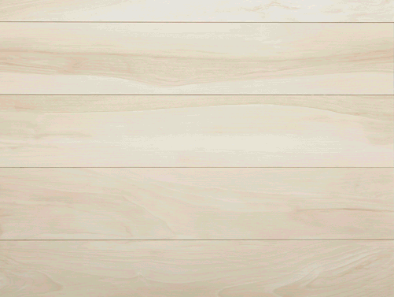

Search by Ingredients names

Search Your Recipe
Category: Side
Area: Turkish
Instructions
Pick through your lentils for any foreign debris, rinse them 2 or 3 times, drain, and set aside. Fair warning, this will probably turn your lentils into a solid block that you’ll have